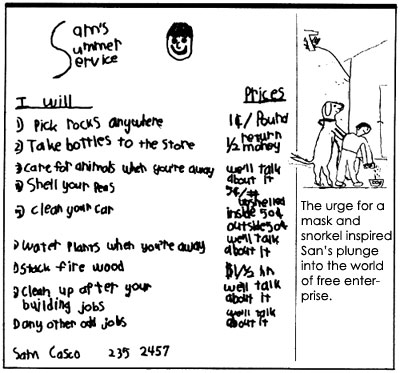

Mother's Children
A junior jack-of-all-trades.
A couple of summers ago, when I was eight, I needed money for a snorkel and mask, because I like to swim on the bottom of a big river in our town. I am a rock hound and there are lots of nice rocks on the bottoms of rivers.
My mother told me that if I earned half of the money for the snorkel and mask, then she would pay the rest. I had to somehow earn $11, so I decided to start a business called Sam's Summer Service. My mother and I made up flyers listing the jobs I would do and their prices. I put copies in my parents' and friends' houses.
The first job I did was to clean my mother's car. I made 50 cents for cleaning the outside and 25 cents for cleaning the inside. Soon other people started hiring me. I picked rocks, shelled peas and weeded gardens.
One of the hardest jobs I had was picking up rocks in a small drainage ditch that goes past our church. First, I had to rake them up, then I had to put them in a bucket or cart and haul them to a bank and dump them over. When I came back the next day, there were more rocks in the ditch. They had come to the surface just like rocks in a garden do. I had to rake them up again! It was hard work, but it was worth it.
The easiest job I had was cleaning cars. I liked it because I did not have to run back and forth like I did picking rocks.
I also liked shelling peas because I could sit down and I hardly had to think about what I was doing. The reason I liked not having to think about it was because I could make up stories in my head and make money at the same time.
One of the funniest jobs I had was taking care of animals at a neighbor's house while they were away. First I had to feed the chickens while a bouncy puppy jumped all over me. The chickens usually got out of their pen, so I had to catch them and put them back in. Then I had to feed the puppy and another dog who ran away every time I let it out of the house. Then I had to go upstairs and feed chicks. Next I went downstairs and tried to find their white cat to give it medicine. Then I fed the cat and looked for the dog who liked to run away. When I found him, I brought him in the house.
The whole job was like working in a zoo.
I went to another house with cats. All I had to do there was feed and water them, clean their litter box and make sure they were around. This was much easier than the first animal job.
Before too long, I earned enough money to buy my snorkel and mask-and even banked a little extra, too.
The next summer, I ran my business again. I raised a couple of my prices (I had experience now), added some new jobs and got rid of one job. Cleaning the inside of cars was harder than cleaning the outside, so I doubled my price for that job. I doubled my price on shelling peas, because I had gotten quicker. I changed "pick rocks in the garden" to "pick rocks anywhere," because that gave me more opportunities to pick rocks and it was a quick moneymaker.
I added four jobs. They were "water plants when you are away," "stack firewood," "clean up after your building jobs" and "take care of pets when you are away." (Pet care wasn't on the list the year before. People had just asked me to do it.) The only job from those four that I ended up doing was taking care of pets. There was a big call for that.
I eliminated "weed your garden" from my list because it was boring and hot and I didn't like leaning over.
I was going to have my four-year-old brother help me, so I took him with me on a job at our neighbor's house up the road. Their bouncy dog had chewed up a foam cushion, and we were supposed to rake up the chewed foam. My brother got too distracted by the neighbor daughter's toys and would not work. I kept telling him to keep raking, but he paid no attention, so I had to do it all myself. I didn't let him work with me anymore-four-year-olds get too distracted.
The second year I made close to $15.
You may want to start a business like mine this summer. If you do, practice the jobs at home first, before you make your price lists, to see how long and hard they are. Also, see what jobs your neighbors and friends need done, and put these on your list.
I like running Sam's Summer Service. It's interesting, it helps people out and it's a good moneymaker.
|
 |
|
|